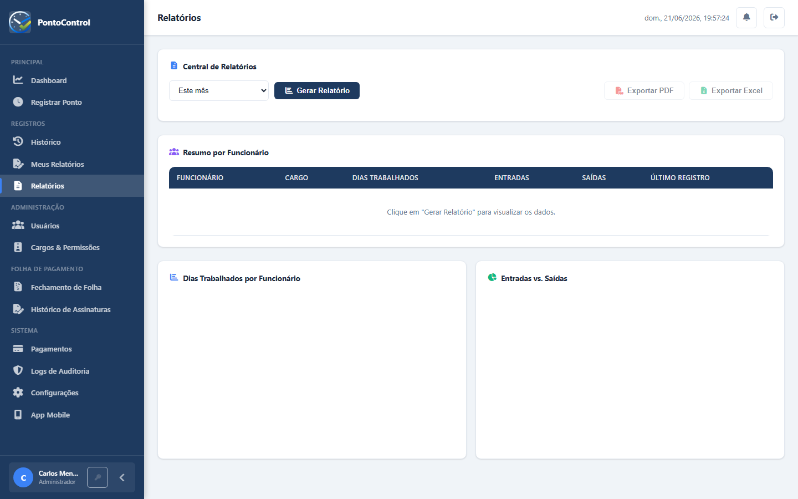

O PontoControl se adapta ao tamanho e à realidade da sua empresa.
Substitua a planilha e o ponto de papel por um sistema simples, com registro via app e relatórios automáticos — sem complicação.
Gerencie múltiplos cargos, permissões e equipes com fechamento de folha estruturado e assinatura digital.
Plano Enterprise com auditoria completa, múltiplos administradores e suporte a operações de maior escala.
Registro com GPS via aplicativo Android — ideal para equipes externas, vendedores e trabalho remoto.
Registros com foto, GPS, timestamp e assinatura digital — evidências robustas para auditorias e processos.
Fechamento de folha com workflow de aprovação, banco de horas automático e histórico de assinaturas.

Fale com a gente ou crie sua conta e descubra na prática.